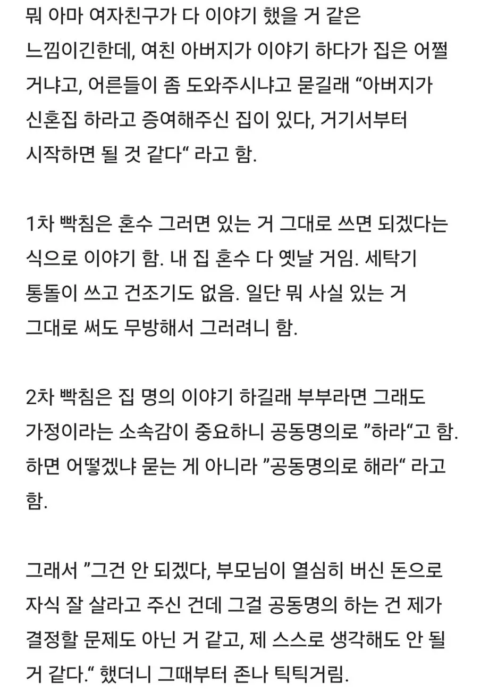
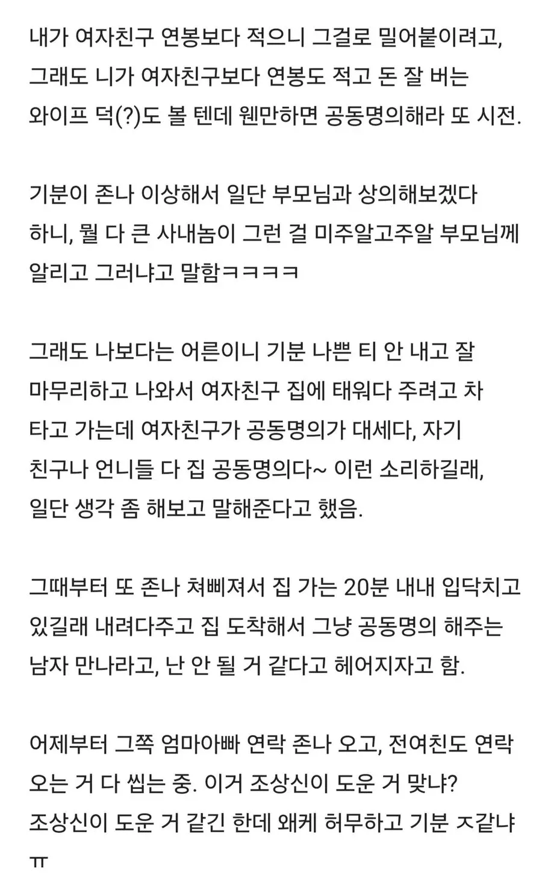

285 · 8 · 14 시간 전 · 원문


조상이 도왔네 진짜....
수집 당시 댓글 8개
은혼 · 2 시간 전
주작
간장게장파 · 2 시간 전
주작인걸까 주작으로 몰아가야하는걸까
↳ 답글 · 혓바닥휘날리며 · 1 시간 전
어디선가 저런 비슷한 상황이 있을수도 있겠지만 저 글 자체는 주작임.
겜신병자 · 54 분 전
설 풀기도 전에 "내가 잘한거맞지?"
오도짜세 · 54 분 전
년째한화우승기원 · 53 분 전
주작이지 시발 ㅋㅋㅋ
RTX4090오우너 · 53 분 전
닉이 블러 처리돼 있다 > 바코드닉이다
죠커 · 28 분 전
얼마나 딱한 삶이냐 도태되서 상대 성별에 악감정만 남아 주작하는 삶은 진짜..
주작